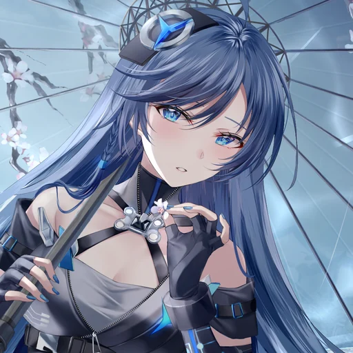

Web
把想法做成页面
从一行 HTML 开始，继续探索设计、交互与更好的浏览体验。
ABOUT / 关于
A SPACE THAT KEEPS GROWING
这是一个正在生长的个人空间。没有固定边界，也不急着被定义—— 用来保存作品、整理兴趣，并见证每一次微小的进步。
从最初的一张蓝色主视觉与几行 HTML 出发，这个页面会随着新的尝试 不断更新。未来的内容，将在这里继续发生。

BLUE / CALM / CURIOUS
Web
从一行 HTML 开始，继续探索设计、交互与更好的浏览体验。
Visual
关注色彩、构图与氛围，让每个作品拥有自己的视觉记忆。
Explore
学习新的工具，也记录途中出现的灵感、问题和小小发现。
SELECTED WORK / 作品
从这个主页开始，
慢慢填满空白。
NEXT CHAPTER
当有新的真实作品与记录时，这个区域会继续生长。
INTERESTS / 兴趣
HTML · CSS · JavaScript
Color · Image · Atmosphere
Animation · Game · Story
LET'S MEET IN THE DIGITAL UNIVERSE
欢迎从下面的入口找到我，也欢迎随时回来看看这里的新变化。